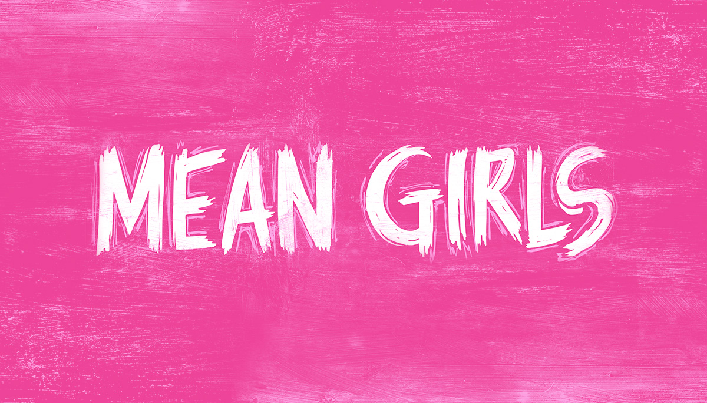
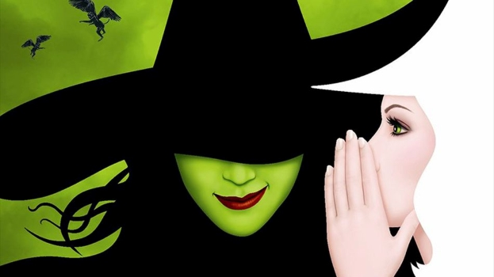
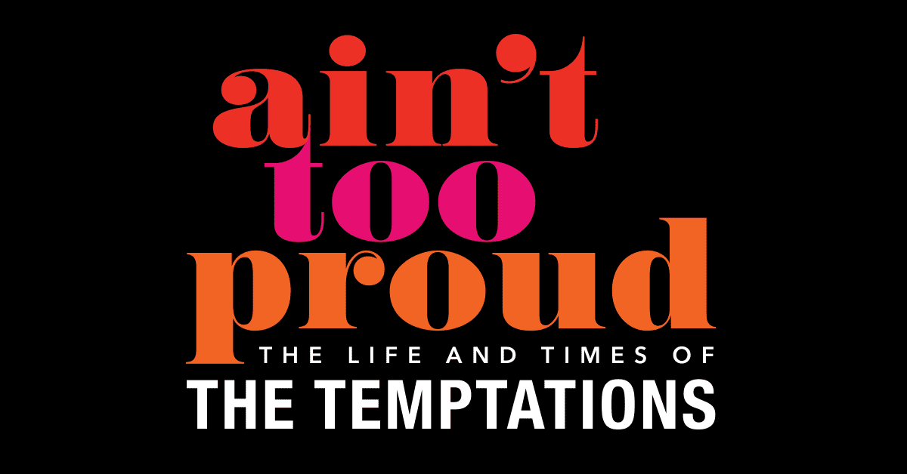
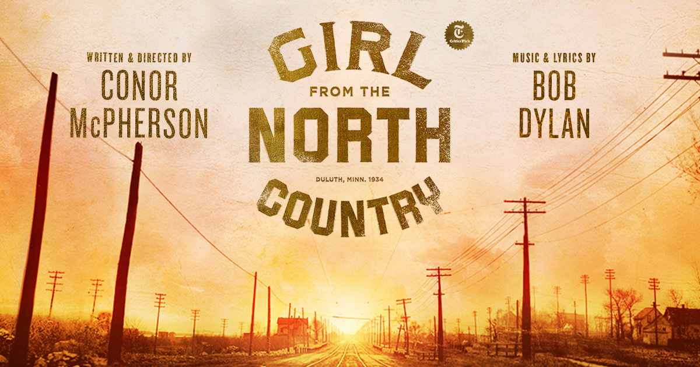
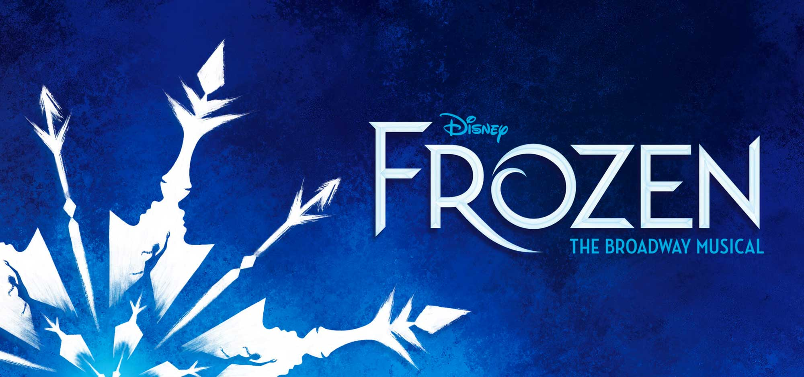
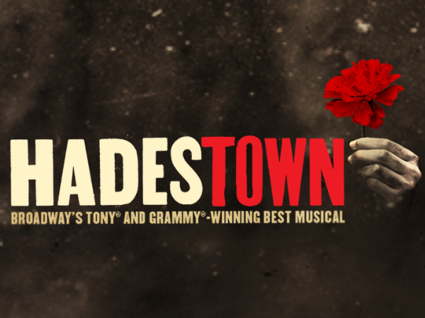
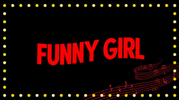

For the Love of Art Philly
Broadway Philly
THE LION KING
August 16, 2023- September 10, 2023 |
7:30 pm, 1:00 pm, 8:00 pm, 2:00 pm, 6:30 pm
Academy of Music
Overview:
More than 100 million people around the world have experienced the phenomenon of Disney’s THE LION KING, and now you can, too, when this best-loved musical returns to Philadelphia. Winner of six Tony Awards®, including Best Musical, this landmark musical event brings together one of the most imaginative creative teams on Broadway. Tony Award®-winning director Julie Taymor brings to life a story filled with hope and adventure set against an amazing backdrop of stunning visuals. THE LION KING also features some of Broadway’s most recognizable music, crafted by Tony Award®-winning artists Elton John and Tim Rice. There is simply nothing else like THE LION KING.
Recommended for ages 6 and older
Tickets from $35-$400
MEAN GIRLS
October 3 – October 8, 2023 | 7:30 pm, 8:00 pm, 2:00 pm, 1:00 pm, 6:30 pm | Miller Theatre
Overview:
Direct from Broadway, MEAN GIRLS is the hilarious hit musical from an award-winning creative team, including book writer TINA FEY (“30 Rock), composer JEFF RICHMOND (“Unbreakable Kimmy Schmidt”), lyricist NELL BENJAMIN (Legally Blonde) and director CASEY NICHOLAW (The Book of Mormon).
Cady Heron may have grown up on an African savanna, but nothing prepared her for the vicious ways of her strange new home: suburban Illinois. Soon, this naïve newbie falls prey to a trio of lionized frenemies led by the charming but ruthless Regina George. But when Cady devises a plan to end Regina’s reign, she learns the hard way that you can’t cross a Queen Bee without getting stung.
Recommended for ages 10 or older
Tickets from $100-$700
WICKED
November 1 – November 26, 2023 | 7:30 pm, 1:00 pm, 8:00 pm, 2:00 pm, 6:30 pm | Academy of Music
Overview:
WICKED, the Broadway sensation, looks at what happened in the Land of Oz...but from a different angle. Long before Dorothy arrives, there is another young woman, born with emerald-green skin—smart, fiery, misunderstood, and possessing an extraordinary talent. When she meets a bubbly blonde who is exceptionally popular, their initial rivalry turns into the unlikeliest of friendships...until the world decides to call one “good,” and the other one “wicked.” From the first electrifying note to the final breathtaking moment, WICKED—the untold true story of the Witches of Oz—transfixes audiences with its wildly inventive story that USA Today cheers is “a complete triumph! An original musical that will make you laugh, cry, and think.”
Recommended for ages 8 or older
Tickets from $66-$1000
COMPANY
November 28, 2023 – December 10, 2023 | 8:00 pm, 7:30 pm, 2:00 pm, 1:00 pm, 6:30 pm | Forrest Theatre

Overview:
PHONE RINGS, DOOR CHIMES, IN COMES COMPANY. Winner of 5 Tony Awards® including Best Revival of a Musical, COMPANY “strikes like a lightning bolt. It’s brilliantly conceived and funny as hell.” (Variety). Helmed by three-time Tony Award-winning director Marianne Elliott (War Horse, The Curious Incident of the Dog in the Night-Time, Angels in America) this revelatory new production of Stephen Sondheim and George Furth’s groundbreaking musical comedy, at once boldly sophisticated, deeply insightful, and downright hilarious.
It’s Bobbie’s 35th birthday party, and all her friends keep asking, Why isn’t she married? Why can’t she find the right man and isn’t it time to settle down and start a family? As Bobbie searches for answers, she discovers why being single, being married, and being alive in the 21st-century could drive a person crazy.
Recommended for ages 10 and older
Subscriptions starting at $35
AIN'T TOO PROUD
January 3 – January 21, 2024 | 7:30 pm, 1:00 pm, 8:00 pm, 2:00 pm, 6:30 pm | Academy of Music
Overview:
AIN'T TOO PROUD – The Life and Times of The Temptations is the electrifying, new smash-hit Broadway musical that follows The Temptations’ extraordinary journey from the streets of Detroit to the Rock & Roll Hall of Fame. With their signature dance moves and silky-smooth harmonies, they rose to the top of the charts creating an amazing 42 Top Ten Hits with 14 reaching number one.
Nominated for 12 Tony® Awards and the winner of the 2019 Tony Award for Best Choreography, AIN'T TOO PROUD tells the thrilling story of brotherhood, family, loyalty, and betrayal, as the group's personal and political conflicts threatened to tear them apart during a decade of civil unrest in America.
Written by three-time Obie Award winner Dominique Morisseau, directed by two-time Tony Award winner Des McAnuff (Jersey Boys), and featuring the Tony-winning choreography of Sergio Trujillo (Jersey Boys, On Your Feet!), the unforgettable story of this legendary quintet is set to the beat of the group’s treasured hits, including “My Girl,” “Just My Imagination,” “Get Ready,” “Papa Was a Rolling Stone,” and so many more.
Recommended for ages 13 and older
Subscriptions starting at $35
MRS. DOUBTFIRE
February 6 – February 18, 2024 |
7:30 pm, 8:00 pm, 2:00 pm, 1:00 pm, 6:20 pm |
Academy of Music
Overview
Everyone’s favorite Scottish nanny is headed to Philadelphia in an internationally acclaimed new hit musical critics call “wonderful, heart-warming, and laugh-out-loud funny” (Manchester Evening News) and “a feel-good, family-friendly comedy that delivers” (The Hollywood Reporter). Based on the beloved film and directed by four-time Tony Award® winner Jerry Zaks, Mrs. Doubtfire tells the hysterical and heartfelt story of an out-of-work actor who will do anything for his kids. It’s “the lovable, big-hearted musical comedy we need right now,” raves the Chicago Tribune – one that proves we’re better together.
Recommended for ages 8 and older
Subscriptions starting at $35
GIRL FROM THE NORTH COUNTRY
February 27, 2024 – March 10, 2024 | 7:30 pm, 8:00 pm, 2:00 pm, 1:00 pm, 6:30 pm | Forrest Theatre
Overview
GIRL FROM THE NORTH COUNTRY is the Tony Award-winning new musical that the Chicago Tribune declares is “a Broadway revelation!” Written and directed by celebrated playwright Conor McPherson and featuring Tony Award-winning orchestrations by Simon Hale, GIRL FROM THE NORTH COUNTRY reimagines 20 legendary songs of Bob Dylan as they’ve never been heard before, including “Forever Young,” “All Along The Watchtower,” “Hurricane,” “Slow Train Coming,” and “Like A Rolling Stone.” It’s 1934 in Duluth, Minnesota. We meet a group of wayward travelers whose lives intersect in a guesthouse filled with music, life and hope. Experience this ‘profoundly beautiful' production (The New York Times) brought to vivid life by an extraordinary company of actors and musicians.
Recommended for ages 12 and older
Subscriptions starting at $35
DISNEY'S FROZEN
March 21, 2024 – April 7, 2024 | 7:30 pm, 8:00 pm, 2:00 pm, 1:00 pm, 6:30 pm | Academy of Music
Overview:
From the producer of The Lion King and Aladdin, FROZEN, the Tony®-nominated Best Musical, is now on tour across North America and the critics rave, “It’s simply magical!” (LA Daily News). Heralded by The New Yorker as “thrilling” and “genuinely moving,” FROZEN features the songs you know and love from the original Oscar®-winning film, plus an expanded score with a dozen new numbers by the film’s songwriters, Oscar winner Kristen Anderson-Lopez and EGOT winner Robert Lopez. Oscar winner Jennifer Lee (book), Tony and Olivier Award winner Michael Grandage (director), and Tony winner Rob Ashford (choreographer) round out the creative team that has won a cumulative 16 Tony Awards. An unforgettable theatrical experience filled with sensational special effects, stunning sets and costumes, and powerhouse performances, FROZEN is everything you want in a musical: It’s moving. It’s spectacular. And above all, it’s pure Broadway joy.
Recommended for ages 6 and older
Subscriptions starting at $35
HADESTOWN
April 10 – April 14, 2024 | 7:30 pm, 8:00 pm, 2:00 pm, 1:00 pm, 6:30 pm | Academy of Music
Overview:
COME SEE HOW THE WORLD COULD BE. Welcome to HADESTOWN, where a song can change your fate. Winner of eight 2019 Tony Awards® including Best Musical and the 2020 Grammy® Award for Best Musical Theater Album, this acclaimed new show from celebrated singer-songwriter Anaïs Mitchell and innovative director Rachel Chavkin (Natasha, Pierre & The Great Comet of 1812) is a love story for today... and always.
HADESTOWN intertwines two mythic tales — that of young dreamers Orpheus and Eurydice, and that of King Hades and his wife Persephone — as it invites you on a hell-raising journey to the underworld and back. Mitchell’s beguiling melodies and Chavkin’s poetic imagination pit industry against nature, doubt against faith, and fear against love. Performed by a vibrant ensemble of actors, dancers and singers, HADESTOWN is a haunting and hopeful theatrical experience that grabs you and never lets go.
Recommended for ages 8 and older
Subscriptions starting at $35
Overview:
The peaceful village of Bebko is alive with joyous celebrations. Suddenly, under attack, everything changes forever. Three siblings, Leto, Mati and Tana, must embark on perilous journeys in order to survive.
Message In A Bottle is a spectacular new dance-theatre show from triple-Olivier Award nominee, Kate Prince, inspired by and set to the iconic hits of 17-time Grammy Award-winning artist Sting, including "Every Breath You Take", "Roxanne", "Walking On The Moon" and more. With a mix of exhilarating dance styles, high-energy footwork and breath-taking athleticism, Message In A Bottle tells a unifying and uplifting story of humanity and hope.
Message In A Bottle is the latest masterpiece from the ground-breaking creator behind West End hits "Some Like it Hip Hop", "Into the Hoods", "Everybody’s Talking About Jamie" (choreography), and "SYLVIA" (Old Vic), and features the astonishing talents of dance storytelling powerhouse, ZooNation: The Kate Prince Company. A Sadler’s Wells & Universal Music UK production co-produced with Birmingham Hippodrome and The Lowry, Salford. Research and development supported by The MOVEment.
Contains scenes of an adult nature
Subscriptions starting at $35
FUNNY GIRL
July 16 – July 28, 2024 | 7:30 pm, 8:00 pm, 2:00 pm, 1:00 pm, 6:30 pm | Academy of Music
Overview:
Featuring one of the most iconic scores of all time by Jule Styne and Bob Merrill, an updated book from Harvey Fierstein based on the original classic by Isobel Lennart, tap choreography by Ayodele Casel, choreography by Ellenore Scott, and direction from Michael Mayer, this love letter to the theatre has the whole shebang!
The sensational Broadway revival dazzles with one of the most celebrated musical scores of all time, including classic songs “Don’t Rain On My Parade,” “I’m the Greatest Star,” and “People.” This bittersweet comedy is the story of the indomitable Fanny Brice, a girl from the Lower East Side who dreamed of a life on the stage. Everyone told her she’d never be a star, but then something funny happened—she became one of the most beloved performers in history, shining brighter than the brightest lights of Broadway.
Recommended for ages 10 and older
Subscriptions starting at $35
Overview:
A mother. A daughter. 3 possible dads. And a trip down the aisle you'll never forget! Set on a Greek island paradise where the sun always shines, a tale of love, friendship, and identity is beautifully told through the timeless hits of ABBA. On the eve of her wedding, a daughter's quest to discover the father she's never known brings three men from her mother's past back to the island they last visited decades ago. For nearly 25 years, people all around the world have fallen in love with the characters, the story, and the music that make MAMMA MIA! the ultimate feel-good show.
Recommended for all ages
Subscriptions starting at $35